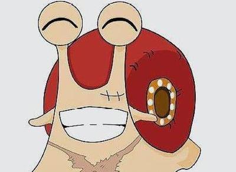
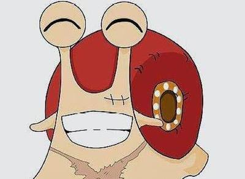

时值“大海贼时代”，为了寻找传说中海贼王罗杰所留下的大秘宝“ONE PIECE”，无数海贼扬起旗帜，互相争斗。有一个梦想成为海贼王的少年叫路飞，他因误食“恶魔果实”而成为了橡皮人，在获得超人能力的同时付出了一辈子无法游泳的代价。十年后，路飞为实现与因救他而断臂的香克斯的约定而出海，他在旅途中不断寻找志同道合的伙伴，开始了以成为海贼王为目标的冒险旅程
 闽江学院123456789@123.com
123-456-789
时值“大海贼时代”，为了寻找传说中海贼王罗杰所留下的大秘宝“ONE PIECE”，无数海贼扬起旗帜，互相争斗。有一个梦想成为海贼王的少年叫路飞，他因误食“恶魔果实”而成为了橡皮人，在获得超人能力的同时付出了一辈子无法游泳的代价。十年后，路飞为实现与因救他而断臂的香克斯的约定而出海，他在旅途中不断寻找志同道合的伙伴，开始了以成为海贼王为目标的冒险旅程
 闽江学院
123-456-789

123456789@163.com

ONE PIECE
 加入路飞
加入路飞